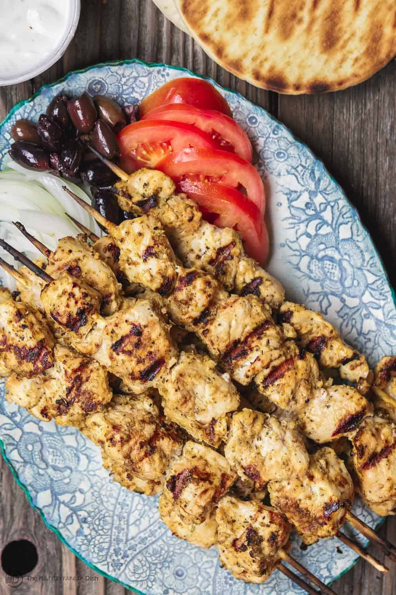

Greek Chicken Souvlaki

Like Kabobs, the word Souvlaki simply means “meat on skewers.” But Greeks also use it to describe the actual meal—warm pita, loaded with perfectly marinated grilled meat and topped with Tzatziki sauce. Other fixings are typically included, and even a handful of fries are tucked into the pita.
2½ lbboneless skinless chicken breast, fat removed, cut into 1½ inch pieces10garlic cloves, peeled2 tbspdried oregano1 tspdried rosemary1 tspsweet paprika1 tspeach Kosher salt and black pepper¼ cupextra virgin olive oil, greek if possible¼ cupdry white wine- Juice of 1 lemon
2bay leaves
Prepare the marinade. In the bowl of a small food processor, add garlic, oregano, rosemary, paprika, salt, pepper, olive oil, white wine, and lemon juice (do NOT add the dried bay leaves yet). Pulse until well combined.
Place chicken in a large bowl and add bay leaves. Top with marinade. Toss to combine, making sure chicken is well-coated with marinade. cover tightly and refrigerate for 2 hours or overnight.
Soak 10 to 12 wooden skewers in water for 30 to 45 minutes or so. Prepare Tzatziki sauce and other fixings, and if you’re adding Greek salad or other sides, prepare those as well.
When ready, thread marinated chicken pieces through the prepared skewers.
Prepare outdoor grill (or griddle). Brush grates with a little oil and heat over medium-high heat. Place chicken skewers on grill (or cook in batches on griddle) until well browned and internal temperature registers 160°F on instant read thermometer (it will continue cooking to 165°F as it rests). Be sure to turn skewers evenly to cook on all sides, about 5 minutes total. (Adjust temperature of grill if necessary). While grilling, brush lightly with the marinade (then discard any left marinade).
Transfer chicken to serving platter and let rest for 3 minutes. Meanwhile, briefly grill pitas and keep warm.
Assemble grilled chicken souvlaki pitas. First, spread Tzatziki sauce on pita, add chicken pieces (take them off skewers first, of course) then add veggies and olives.